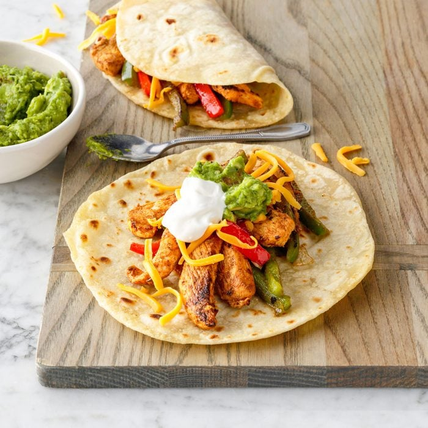

Fajitas-Recipe
Odin-Recipes

Description
Fried chicken with an amazing special seasoning. Peppers, onions, grated cheese and guacamole all put together in one delicious tortilla.
Ingredients
- Chicken - 300g
- Pepper - 2
- Onion - 1
- Cheese
- Guacamole
- Tortillas
Steps
- Fry your chicken in a pan on high heat with seasoning
- Chop Peppers and Onion
- Grate Cheese
- Put chopped pepper and onion into pan once chicken is done on a low heat
- Add to bowl from pan
- Fill up tortilla with all the ingredients starting with guacamole for the base and enjoy!